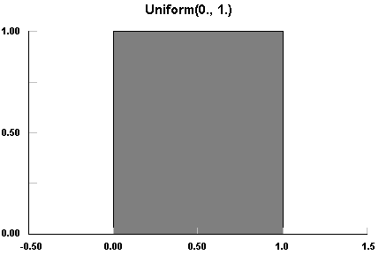
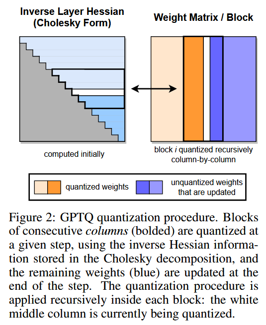
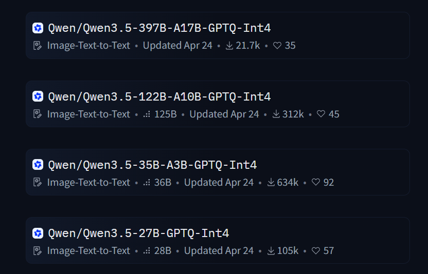

Efficient AI
Quantization
Aditya Desai
Many thanks to all the resources listed in References on the main website. Almost all figures are taken from these resources; some were generated with Gemini. Some images are taken from Google Images and still need proper citation (in progress).
Quantization Basics
Definition
Quantization is the process of mapping continuous infinite values to a smaller set of discrete finite values. In the context of simulation and embedded computing, it is about approximating real-world values with a digital representation that introduces limits on the precision and range of a value. [Mathworks]
Working Definition
Given a set $X \subseteq R$ of values and probabitlity distrbution P over X, quantization is a function Q
that maps X to a smaller set of values Y so as to minimize the expected error between X and the value that
Q(X) represents.
\[
Q: X \rightarrow \{0,1,\ldots,|Y|-1\}
\]
The de-quantization maps the integer representation back to the original value.
\[
Q^{-1}: \{0,1,\ldots,|Y|-1\} \rightarrow R
\]
\[
\textrm{Quantization Error} = E_{x \sim P}[|x - Q^{-1}Q(x)|^p]
\]
Usually we use p = 2 for the squared error.
Signal-to-quantization-noise ratio
Quantization error $\tilde{x} = x - Q^{-1}(Q(x))$ acts as noise. SQNR measures how large the signal is relative to that noise:
$$ \mathrm{SQNR} = \frac{\mathbb{E}[x^2]}{\mathbb{E}[\tilde{x}^2]} $$- Often reported in dB: $10\log_{10}(\mathrm{SQNR})$
- Higher SQNR $\Rightarrow$ better fidelity after quantization
How to represent a numerical value in a computer?
INT$k$ (INT8, INT16, INT32, INT64):
- Has one sign bit and $k-1$ bits for the magnitude.
- Can represent values from $-2^{k-1}$ to $2^{k-1} - 1$.
How to represent a numerical value in a computer?
Float(EeMm) (FLOAT16, FLOAT32, FLOAT64): Has one sign bit, $e$ exponent bits and $m$ mantissa bits.

Different formats have different range and precision

Example FP8(E4M3) (old convention)

This is how FP8 and INT8 quantizes the real value line.
Quantization in ML
- FP64, FP32, and FP16 (also BF16) are quite common go-to formats for ML computation.
- The discussion of quantization in ML is usually to go towards smaller number of bits to represent the values (weights / activations) in ML.
- Ex. Can we convert given set of weights to 4 or 8 bits per element?
Example 1
X = [0,1], P = Uniform(0,1), if we wanted to use 2 bits to represent the quantized value, |Y| = 4, how would we quantize?

Designing a quantizer
There are two components:
- Partition the input space into regions. $$ [0,1] = [0,0.25) \cup [0.25,0.5) \cup [0.5,0.75) \cup [0.75,1]. $$
- Assign a representative value to each region. $$ y_i = \frac{a_i + b_i}{2}, $$ where $[a_i, b_i]$ is the interval.
Quantizer mapping
| Interval | $Q(x)$ | $Q^{-1}(Q(x))$ |
|---|---|---|
| $[0, 0.25)$ | $00$ | $0.125$ |
| $[0.25, 0.5)$ | $01$ | $0.375$ |
| $[0.5, 0.75)$ | $10$ | $0.625$ |
| $[0.75, 1]$ | $11$ | $0.875$ |
Can you show that this quantization indeed minimizes the expected MSE ?
Error in Example 1
- Bin width $\Delta = 0.25$. Error in each bin lies in $[-\Delta/2,\, \Delta/2]$.
- Max error: $$ \max_x \bigl|x - Q^{-1}(Q(x))\bigr| = \frac{\Delta}{2} = 0.125 $$
- Expected MSE ($x \sim \mathrm{Uniform}[0,1]$): $$ \mathbb{E}\!\left[\bigl(x - Q^{-1}(Q(x))\bigr)^2\right] = \frac{\Delta^2}{12} = \frac{1}{192} \approx 0.00521 $$
ML: Set of data in high precision
In most cases, we will encounter a fixed dataset $X$ that we need to quantize. In such a case, the set itself will define the range of interest and distribution of values.
Linear Quantization
Most common way to linearly map data from higher precision (e.g. FP16) to lower precision (e.g. INT8).
Symmetric linear quantization
Real value $0$ is mapped to $0$ in the quantized domain.
Symmetric linear quantization

- $r_{\max} =$ max absolute value of the data
- range $= [-r_{\max},\, r_{\max}]$
- $q_{\max} =$ max value of the integer range $(2^{b}-1)$
- $Q(r_{\max}) = q_{\max}$ and $Q(-r_{\max}) = -q_{\max}$
- $\lambda = r_{\max} / q_{\max}$
- $Q(r) = q = \mathrm{round}(r / \lambda)$
- $Q^{-1}(q) = q \cdot \lambda$
Asymmetric (e.q. Affine) linear quantization
Real value $0$ is not mapped to $0$ in the quantized domain.
Asymmetric (e.q. Affine) linear quantization

- $r_{\max}, r_{\min}$ = max and min in data
- range $= [r_{\min},\, r_{\max}]$
- $q_{\max}, q_{\min}$ = max and min value of the integer range. i.e. $-2^{b-1}$ and $2^{b-1}-1$
- $\lambda = (r_{\max} - r_{\min}) / (q_{\max} - q_{\min})$
- $z_q = q_{\min} - r_{\min} / \lambda$
- $Q(r) = q = z_q + \mathrm{round}(r / \lambda)$
- $Q^{-1}(q) = (q - z_q) \cdot \lambda$
Linear Quantization
- Linear quantization, despite its simplicity, is quite accurate for practical use cases. Thus, it is found in many state of the art quantization methods.
- When can linear quantization fail ?
1. Outliers


Range Mapping and Clipping
A simple way to handle outliers is to clip the values to the range. Outliers get mapped to boundaries.
Range Mapping and Clipping
- Reduces error for small values
- But errors increase for large values
- Any other options?
Rotations: Random Rotations for outlier removal
- rotation_outliers.html
- Artifact of the geometry of high dimensional spaces.
Rotations: Random Rotations for outlier removal
- We analysed clipping, but generally you can see that coordintes concentrate near 0 leading to better quantization.
- Random Gaussian projections are :
- Expensive to generate and store
- Expensive to apply to large matrices
Structured Random Rotations: Randomized Hadamard Transform
\[ H_1 = \begin{bmatrix} 1 \end{bmatrix}, \qquad H_{2^k} = \begin{bmatrix} H_{2^{k-1}} & H_{2^{k-1}} \\ H_{2^{k-1}} & -H_{2^{k-1}} \end{bmatrix} = H_2 \otimes H_{2^{k-1}}. \] \[ H_2 = \begin{bmatrix} 1 & 1 \\ 1 & -1 \end{bmatrix}, \qquad H_4 = \begin{bmatrix} 1 & 1 & 1 & 1 \\ 1 & -1 & 1 & -1 \\ 1 & 1 & -1 & -1 \\ 1 & -1 & -1 & 1 \end{bmatrix}, \]Hadamard transforms are orthogonal matrices, we can use normalized Hadamard transforms to perform rotations. $H_n / \sqrt{n}$ is a normalized Hadamard transform.
Randomized Hadamard Transform
- Has a faster algorithm O(n log(n)) instead of O(n^2) for random Gaussian projections.
- Fast cuda libraries also exist now : HadaCore
Issue with linear quantization
-
Any other failure modes?
- What if the data is not uniformly distributed?
Example: Bimodal distribution

Imagine a arbitrary distribution of values. Linear quantization will not be able to capture the distribution accurately.
Codebook Approach
- Instead of using a linear mapping, we use an explicitly learned mapping.
-
Algorithm:
- Cluster the data into $m$ clusters.
- Assign a representative value (centroid) to each cluster.
- Store the codebook (indices) and centroids in the data structure.
Example

- cluster index is the codebook index and the centeroid is the representative value.
Memory cost of the codebook approach
Let $|X| = n$, $|Y| = m$, and the default precision be $32$ bits.
- Original memory: $ 32\,n \text{ bits} $
- Codebook approach: $ \mathrm{Mem}_{\mathrm{codebook}} + \mathrm{Mem}_{\mathrm{centroids}} $
- Memory of centroids: $ = 32\,m \text{ bits} $
- Memory of codebook (indices): $ = n\,\lceil\log_2 m\rceil \text{ bits} $
Linear vs codebook quantization
| Aspect | Linear Quantization | Codebook-based (Non-linear) |
|---|---|---|
| Mapping function | Affine: $q = \mathrm{round}(x/s) + z$ | Lookup: $q = \arg\min_i |x - c_i|$ |
| Reconstruction | $x \approx s(q - z)$ | $x \approx c_q$ |
| Optimal for | Uniformly distributed values | Arbitrary, skewed, multimodal distributions |
| Hardware friendliness | Excellent | Moderate to poor |
| Inference speed | Very fast | Additional lookup overhead |
| Computation | Can happen in quantized space | Needs to be always dequantized |
When is rounding to nearest bad ?
- Till now we have been using rounding to nearest as the default rounding mode.
- rounding to nearest generally would minimize the error per element ( and thus l2 norm error)
- It is important to know what the data we are quantizing is going to be used downstream to decide if we should care about minimizing the error per element or otherwise.
- when can rounding to nearest be bad ?
Example: inner products
In most cases, we really care about the inner product of the quantized vectors with the input. How does the error for $\langle x, w \rangle $ where w is quantized accumulate?
Applying Quantization to LLMs
- Linear Layers ( Most parameter consuming layers)
- KV Cache ( Cache for the key and value vectors)
How to quantize a model ?
\[ \hat{w} = \arg\min_{w \in QuantizedSpace} \mathcal{L}(w, X) \] This is a NP-hard problem. So again we need to approximate the solutions.- Can we apply similar ideas we used for pruning?
- What is the first weight you should quantize?
OBS for Quantization
Revisit the OBS for pruning. See prune_a_model.html for notes on pruning and its connection to quantization. Only thing that changes is the constraint
OBS for weight quantization
Sparse GPT (pruning method) $\rightarrow$ GPTQ (Quantization method)

- Quantization, Pruning, or any approximation method provides a "structured space" where the weights can lie in.
- This approach is generic enough for any approximation method including combining these methods together.
GPTQ / Sparse GPT Update
- This is important especially when used at inference time (no training allowed)
- If combined with intermittent training - you can ignore the update as in IMP.
- GPTQ is go-to for quantization of LLMs!
